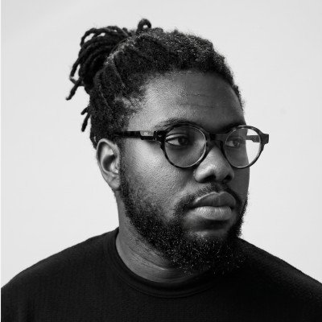

fewer UI inconsistencies at handoff
Acceptance criteria and design QA on the CRM Educacional design system. Measured by the average QA approval rate during implementation.
Design systemI'm a product designer with a neuroscience background, working end-to-end across the design process.

Acceptance criteria and design QA on the CRM Educacional design system. Measured by the average QA approval rate during implementation.
Design systemAt Gama Academy, after turning the service into a product with templates and standards. Deliveries that took 4 days started shipping in 2.5.
Design opsYDUQS's first design system library, used by several squads. We moved from handcrafted work to templates.
Design systemWhether it's an AI-built product that needs a real experience or an idea that has to go live fast, I take care of it from discovery to code. I'm also open to Senior Product Designer roles on products with scale, legacy and design governance, in teams that decide with evidence and want to mature discovery, design systems and AI in the product cycle.
Redesign of the AI ad-creative wizard at ADScanner, a Brazilian paid-media platform. I came in to understand why the feature's completion rate was low and why it generated so many support tickets.
Before: a giant prompt and 60+ colors to pick from, with no preview.After: a few choices, each with a visible effect and the cost right on the button.
A six-step AI wizard that almost nobody finished, and those who used it opened tickets. Changing one word in the headline meant finding and rewriting a 1,600-character prompt.
The product demanded exactly the skill people paid to not need.
I started with no funnel and no session recordings. I interviewed the CEO, the CTO and the in-house media buyer, then three users with a moderated Maze test that gave us the first baseline: 32 minutes.
A heuristic evaluation surfaced 23 problems, five of them blocking completion, and card sorting reorganized the menu.
Visual choices with a preview instead of an open prompt. Ad copy in its own field, credit cost next to the button, and editing after generation without paying again.
The steps got task names: Audience, Goal, Style, Creative and Publish.
Completion time dropped from 32 to 16 minutes with the same three users. Decisions in the style step went from 9 to 5. I delivered it as a coded prototype on the product's codebase.
n = 3, on a prototype, with no control group. I defined the two metrics for the team to instrument.
Three stakeholders and three users, all remote, with a task on a shared screen.
The product worked like one giant CRUD app: create, read, update, delete. No discoverability, no hierarchy, no flow. In practice, it was an endless form.
Like a lot of vibe-coded products, it had zero technical bugs. The problems were conceptual and UX problems.
Small business owners who want an easier way to create content for their social channels.
Two people asked for an example to copy before writing anything.
The balance at the top didn't say how much the next generation would cost.
"Script" and "Copies" were read as video steps and file copies.
Nobody wanted just a creative. They wanted to publish today, in the network's format.
"If I knew how to describe the image like that, I wouldn't need artificial intelligence."
Fashion e-commerce owner
I evaluated the six screens against Nielsen's heuristics and logged 23 problems. These are the severity-4 ones.
Changing one headline word meant finding and rewriting a 1,600-character block. Style, font and color each had two controls, with no rule for which one won.
No screen said what the next generation would cost. People found out by checking their balance.
Preset, prompt, reference, aspect ratio, size, 30+ fonts and 60+ colors, all before the button.
Steps were named after model calls, not after the user's decision.
One wrong word meant repeating the whole flow and paying again. That's where most of the 32 minutes went.
I aligned with the tech lead on four gating questions. A problem only made the roadmap if it passed the first three and was feasible on the fourth.
The business pain was drop-off.
Main path before edge cases.
Mistakes cost money and wear out patience.
Checked against the codebase with engineering.
"Creative Flow" became "Create Ad", and each step is now named after the decision the user makes there.
I mapped the components and where the credit rules lived before designing.
Missing components were built in Claude with the design system loaded.
Waiting, generation error, compliance rejection, empty and insufficient balance.
Claude Code and Cursor on the repository, with the Figma MCP reading the tokens.
The six steps of Create Ad from the handoff prototype, each one in action.
Across the three moderated test sessions, I saw the combined effect of choice overload and status quo bias. We watched the decision process take a shorter path.
Before, the interface had too many options and no recommendation. You could practically see a loading spinner on people's faces. After cutting the options and adding a context-based recommended tag, the startled look disappeared. I believe this was a big step toward cutting completion time by 50%.
Some users simply leaned on automation bias and kept the system's recommended default, which cut decision time even further.
Too many options and no recommendation stall the choice.
A suggested default becomes the easiest path to follow.
People who trust the system keep what it recommends.
60+ colors and 30+ fonts, no recommendation
4 palettes and 5 fonts, with a Recommended tag based on context
A project where I worked as Product Designer, mapping the LLM's states, user journeys and touchpoints.
The product's goal is to be an AI hub that speeds up internal projects, removes the LLM's context barrier and reduces the chance of data leaks.
Internal teams who need to validate, list and look up technical project documents quickly.
On this project, the interface was the key differentiator. Each agent needed its own identity; without that, the hub would be little more than a NotebookLM clone.
So I focused on designing contextual interfaces for the main agent types we mapped across the company.
First the map: the validator's seven states, each with its real example.Then the screen: the result with status and source on every row, and the cost stated.
Engineering teams needed to validate, list and look up technical project documents with AI. Answers had to come from the right source and show where they came from, because a wrong report has real consequences.
To be added: project timelineI started with qualitative research through a form to understand which assets the company already had, such as documents and spreadsheets, and how teams used each one day to day. That's what told us what would become an agent inside the product.
Then I mapped the journeys of the people who would use the hub, the touchpoints with the LLM and the states the conversation would need, including the moments when the model could be slow, get it wrong or have no answer.
We built a hub of agents from the assets the company already used. You know that ancient Excel spreadsheet that keeps coming back to haunt us? It became an agent.
We shortened the path to the most used features by giving each agent its own interface.
The conversation states in the Document validator prototype, each one in action.
My biggest learning on this project was time management. The deadline was very tight, and that's when I started using AI in my process: transcribing meetings and turning them into PRDs, validating, prototyping fast to test with AI, and saving human effort for building and thinking.
Basically, that's when I started applying the 10-80-10 concept I learned from Elemar Jr.: 10% human, 80% AI, 10% human. We don't need to do repetitive tasks.